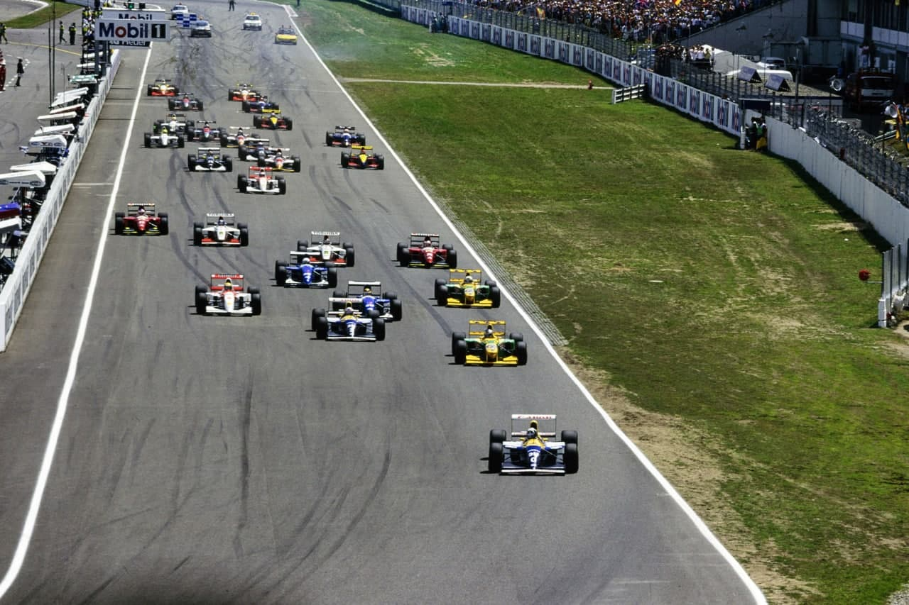
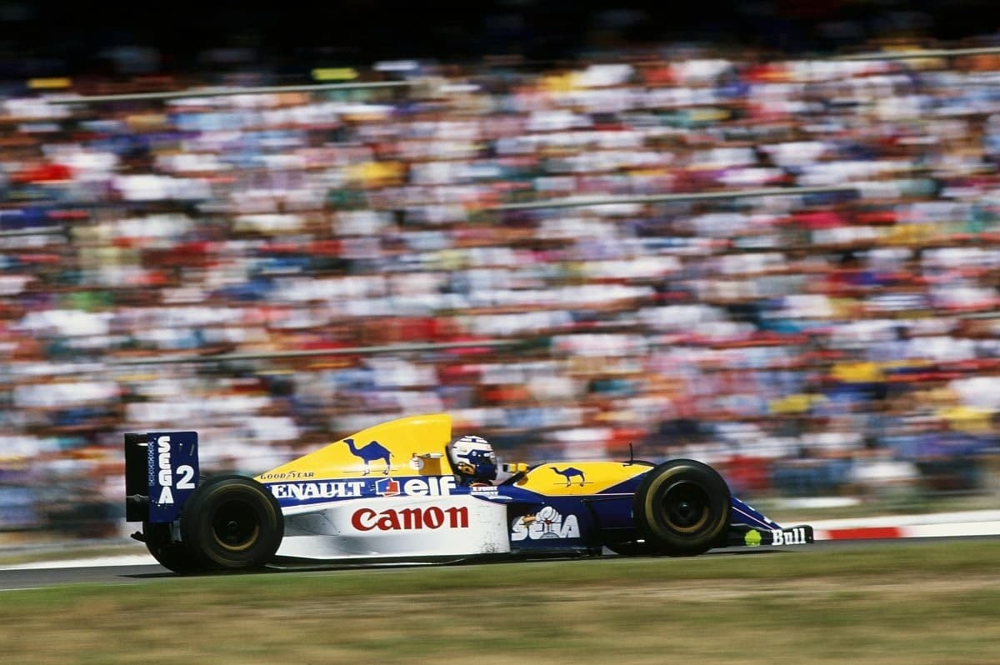

POR UM FURO

Hill perde corrida na penúltima volta e Prost herda a sua 7ª vitória do ano. Schumacher faz alemães delirarem com seu 2°. Blundell é 3°. Senna, depois de erro recupera para 4°. Acidente espetacular de Warwick no warm-up. Estabilidade: equipes chegam a acordo unânime para novo regulamento.
por Francisco Santos
Damon Hill parece ter sido amaldiçoado. Depois das raras quebras de motor em Barcelona e principalmente em Silverstone que lhe custaram duas vitórias quase certas, agora em Hockenheim foi demais. Na penúltima volta, teve um furo e o pneu rebentou, deixando a vitória para um surpreendido Prost, que já nem contava com a vitória depois de ter sido injustamente penalizado com um stop & go e perder 20s. Mesmo assim o seu tempo total da corrida foi apenas 18,848s superior ao de Mansell em 92. O francês aumentou para 27 pontos a sua liderança no campeonato. Foi um fim de semana cheio de emoções. Primeiro, a reunião das equipes em que finalmente chegaram a um salvador compromisso.
O milagre de Warwick
Depois, no warm-up, um dos mais espetaculares acidentes que a F 1 já viu, com Derek Warwick a sair milagrosamente ileso e a corajosamente decidir correr quatro horas depois. Em tudo fez recordar o acidente em 1982 que pôs fim à carreira de Didier Pironi. Também chovia e a visibilidade era quase nula para quem segue na esteira da espessa cortina de água lançada pelos pneus e que, ao contrário de outras pistas, permanece no ar devido à falta de vento no meio deste bosque. Na aproximação da terceira chicane, Warwick perseguia Prost e Andretti, que se aproximavam do Lola muito mais lento de Badoer. Alain e Michael conseguiram passar Badoer sem problema, mas Warwick ficou sem a mínima visibilidade e atropelou o Lola a alta velocidade, com as rodas do lado direito do Footwork destruídas no impacto. “Fiquei sem freios, sem direção, sem controle algum”, lembrou Derek, “mas ainda assim tentei apontar o carro aos guard rails da esquerda para diminuir a velocidade. Mas não adiantou muito.” O Footwork foi rechaçado dos rails para a grama, passou pelas zebras da chicane já com toda a suspensão destruída, e já meio no ar, para finalmente se voltar e cair ainda em velocidade, virado ao contrário, na caixa de brita, com a cabeça de Warwick protegida apenas pela barra “santo antônio”. Quando os restos do chassis pararam, meio enterrados na brita, fez-se silêncio. Era impossível Warwick estar ileso. Os comissários viraram o carro e o bravo inglês mexe-se e é retirado do carro sem grandes problemas, apenas com uma dor de cabeça, o pescoço dorido e três dedos feridos. Três horas e meia depois estava no grid!

Logo na primeira volta da corrida, um erro de Senna na primeira chicane relega-o para 24° lugar. Na largada, enquanto Hill e Schumacher dispararam na frente, Prost foi de novo lento. Ayrton aproveitou e conseguiu passar o francês na primeira curva. Mas, na reta seguinte, Prost, com a maior potência do seu motor, consegue ganhar terreno e coloca-se ligeiramente à frente do McLaren. Ayrton aperta, quase tocam rodas, mas Prost decide que pela primeira vez não iria ceder nem um milímetro da freada para a primeira chicane, que os dois deixaram para além do limite. Enquanto o maior apoio aerodinâmico do Williams permitiu a Prost segurar o carro, Ayrton, que tinha levado a sua freada ainda mais adiante ficou com o McLaren desequilibrado. Entre a primeira e segunda perna da chicane voltaram a tocar rodas, mas Prost não cedeu, e Ayrton rodou no meio da segunda perna ficando com carro atravessado na pista. Não só perdeu pela primeira vez uma briga limpa para Prost, como todo o tempo para deixar passar todo o pelotão. Sua recuperação foi um dos pontos altos da corrida, subindo para 7° à 14′ volta, para ser já 5° antes de trocar de pneus pela segunda vez e herdar o 4° lugar na penúltima volta.

O escândalo
Também na 1ª volta, logo depois do incidente com Senna, Prost envolveu-se no escandaloso caso da corrida. Na freada para a segunda chicane, olhou nos espelhos e viu Brundle rodar na freada para a primeira perna da chicane. “Se virasse para a chicane ele me bateria na traseira e por isso decidi seguir em frente, pela escapatória”, esclareceu Prost. Brundle, com o carro de lado, também saiu pela escapatória. Nenhum dos dois pilotos ganhou tempo ou posições com a manobra de emergência. No entanto, o Diretor da Corrida, Roland Bruynseraede, penalizou ambos com stop & go, “ao contrário do que havia sido combinado na reunião com os pilotos de manhã”, lembrou Brundle. No final da prova, ao ver o vídeo do incidente, Bruynseraede admitiu o erro que custou 4 pontos a Brundle, mas não à Ligier, pois Blundell conseguiu mais um pódio, atrás de Schumacher.
A maldição de Hill
Por fim, quando já se festejava a primeira e merecida vitória de Damon, aconteceu o imprevisto. “Desde o acidente de Patrese nos testes de Imola, os Williams têm uma luz avisadora de qualquer problema com os pneus. A luz acendeu-se na entrada da chicane da Ostkurve, mas não liguei muito por pensar que a pressão dos pneus tivesse baixado por eu andar mais devagar. No entanto, logo depois da saída da curva, o pneu traseiro esquerdo rebentou a uns 210 km/h. Não merecia isto”, relembra um furioso Hill. Ainda tentou trazer o carro para os boxes, mas na chicane de entrada do pit lane, o carro rodou. Já nem importava. Prost já havia passado e herdado uma vitória que nem esperava: “depois da penalização apenas visava pontos para o campeonato”.
Euforia alemã
No meio de tudo isto, o único piloto verdadeiramente alegre era Schumacher. Nos pódios é sempre ele quem mais festeja. Mas, em casa, chegando em segundo, depois da sua tática de trocar duas vezes de pneus para conseguir chegar nos Williams no final da prova não ter dado certo, Michael estava delirante, chegando mesmo a parar na volta de consagração para pegar uma bandeira alemã e a acenar aos eufóricos fãs que lotaram o circuito numa histeria nacionalista bem própria dos momentos que a Alemanha vive atualmente na inflamação dos valores germânicos, que tanto tem assustado as memórias de muitos…
Circuito maldito
Só se compreende que uma pista como Hockenheim continue fazendo parte do calendário da F1 por ser alemã, neste mercado cada vez maior e mais interessante com os novos valores de pilotos alemães. Duas retas enormes de pista ondulada no meio de um bosque, intermeadas por chicanes, e uma zona do estádio mais espetacular pelas arquibancadas quando cheias do que pelo seu traçado, constituem uma pista desinteressante e perigosa. Principalmente quando chove.
Série 8 para a McLaren
E foi isso que aconteceu antes dos primeiros treinos e no warm-up. Enquanto na tabela de resultados não houve novidades, com os dois Williams de novo dominando os treinos, com Prost fazendo mais uma pole, muitas batidas durante as cinco sessões, com shows repetidos de Badoer e um espetacular de Berger, houve algo de novo no pit lane: novo motor Ferrari de 4 válvulas por cilindro, nova evolução do motor Yamaha, e a decisão da Ford de fornecer motores iguais da série 8 à Benetton e à McLaren, o que enfureceu as hostes coloridas. No entanto, ambos correram com série 7: Benetton por opção, McLaren porque o motor de Senna teve um vazamento de óleo no warm-up.
Controverso Berger
Na corrida os destaques principais devem ir para Berger que se envolveu em vários incidentes: primeiro com Andretti, que lhe bateu à 5° volta e abandonou; com Senna e depois Blundell, em cenas de dificultar as ultrapassagens já que com o novo motor o Ferrari estava mais rápido do que antes, ele sentiu que podia fazer frente aos outros. Como vários outros – Hill, Prost, Fittipaldi não trocou pneus, ao contrário de Senna e Schumacher que trocaram duas vezes. Ficou feliz com o sexto lugar. Suzuki, que fizera o 8° tempo nos treinos, também foi penalizado com um stop & go por ter usado a escapatória de uma chicane para evitar … Warwick, que rodara e como consequência teve de trocar o bico e perder 2 voltas. Apesar de andar com um escapamento quebrado, Christian chegou em 11° depois de uma excelente largada. Rubinho foi mais infeliz: com uma primeira volta lenta devido à parada de Zanardi na largada, recuperou para 11° antes de trocar pneus à 19° volta. “Foi o meu pior fim-de-semana: o carro saía de frente, depois melhorou quando o baixei, depois piorou com os pneus gastos; aí troquei, mas depois a barra de direção quebrou”, lamentou Rubinho. Finalmente abandonou com um rolamento de roda quebrado, quando estava em 12°.
O FIM DE SEMANA
Gasolinas especiais
O Conselho Mundial da FISA considerou (dia 18) legais as gasolinas Elf e Agip nos GP da Espanha, Mônaco e Canadá, dando às equipes o benefício da dúvida devido à discrepância de resultados das análises da FISA e das petroleiras. Assim, Prost manteve os 23 pontos destas 3 provas. No entanto, as regras de combustíveis passaram a ser mais rigorosas. Os novos combustíveis serão analizadas pela FISA antes de poderem ser usadas. Sem isso será a exclusão.
Reações à FISA
Depois do Conselho Mundial ter proibido suspensões ativas e controle de tração: Max Mosley: “Isto já foi longe demais, e tem de ser resolvido com urgência. Tenho mais coisas a fazer para reorganizar a FISA”. Frank Williams: “Para chegarmos a um compromisso é preciso um novo estado de espírito”. Peter Sauber: “Sou a favor destas proibições, desde que não haja mais mudanças”. Ken Tyrreil: “Tudo isto podia ter sido evitado em fevereiro, quando Mosley propôs as mudanças. As grandes equipes deviam ter visto o alcance das medidas”.
Finalmente o acordo
Nas vésperas do GP, no Hotel Weikershof, em Reilingen, próximo de Hockenheim, 12 das 13 equipes (Lola representada pela Ferrari), aprovaram por unânimidade uma proposta à FISA. A FISA sugerira que existindo consenso, poderia encarar medidas mais flexíveis para o futuro. A equipes optaram, finalmente, por isso, acordando num conjunto de 17 propostas. Os principais pontos são:
Para imediato: 26 carros no grid de largada.
Para 1994: Proibição: suspensão ativa e seus derivativos, controle de tração, ABS e freios assistidos, direção às 4 rodas e/ou assistida; câmbios automáticos; mais de 5 pessoas no pit-lane em cada carro.
Permitidos: Telemetria, mas apenas do carro para o box; câmbios que possam trocar de cada vez apenas uma de sete marchas (câmbios variáveis como o que a Williams já testa); 64 motores novos (ou revisados) para uma equipe/ano, ou seja 2 motores/carro/GP; reabastecimentos com equipamento fornecido pela FISA que depende apenas da gravidade (débito de 12 lt/s); capacidade mínima do tanque - 200 lts.
Mudanças a longo prazo: Motores de 3.500cc até o ano 2000; alterações no Acordo Concorde com específicos prazos ainda requerendo unânimidade, com maior número de votos para as equipes ganhadoras; redistribuição dos prêmios monetários; pontos para os 10 primeiros; em 1995: peso mínimo dos carros (com piloto) 575kg,e cockpit capaz de acomodar pilotos de 1,90m. Apesar de ser ainda necessário negociar os detalhes, como a definição de suspensão ativa e a possibilidade de instalar transmissões de variação constante (CVT), este passo recupera a estabilidade para a F1, pelo menos nos próximos 5 a 10anos. Foi reinstaurado grande parte do poder das equipes, que reescreverão os regulamentos técnicos para aprovação da FISA.
“Precisamos dar maior ênfase aos pilotos, sem destruir a tecnologia, o que seria péssimo para a F1. A dificuldade foi achar o modo de conjugar tudo”, apontou Ecclestone.
Patrese: 250 GPs
Riccardo superou seu recorde: 250 GPs, contra 204 de Piquet e 193 de Prost. Aos 39 anos, é o mais velho. Na sua carreira de 17 anos na F1, obteve: 6 vitórias, 8 poles, 1 vice-campeonato e é 12ª na classificação histórica por pontos.